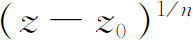

5．魏尔斯特拉斯探讨函数论的途径
正当柯西在由解析式表示的函数的导数和积分的基础上建立函数论的时候，魏尔斯特拉斯开辟了一条新的探讨途径。他于1815年出生在威斯特伐利亚（Westphalia），在波恩大学学习法律。学了四年以后，他在1838年转向数学的学习，但未完成博士工作，而是得到许可，当一个高中（gymnasium）教员，从1841年到1854年他教年轻人的写作课及体育课。这些年间他与数学界没有接触，但他刻苦地进行数学研究。在这段时间内他发表的少数几个结果使他在1856年获得在柏林的工学院讲授技术课程的位置。同一年他成为柏林大学的讲师，随后在1864年成为教授，一直担任这一职位到1897年去世。
他是一个有条理而又苦干的人。不像阿贝尔、雅可比、黎曼那样，他没有直觉的闪光。事实上他不信任直觉，而是致力于使数学推理建立在一个牢固的基础上。有鉴于柯西的理论建立在几何的基础上，魏尔斯特拉斯转而构造实数理论；这个工作约在1841年完成之后（第41章第3节），他在幂级数的基础上建立起解析函数的理论，并建立起解析开拓的方法，幂级数的技巧是他从他的老师古德曼（Christof Gudermann，1798—1852）那里学来的。这个工作是在19世纪40年代完成的，虽然当时他并没有发表。他在函数论的许多其他方面做出了贡献，并研究了天文学中的n体问题和光的理论。
很难确定魏尔斯特拉斯的创作的日期，因为当他第一次得到这些创造时发表的并不多。通过他在柏林大学的讲演，他的许多工作才被数学界知道。当他在19世纪90年代出版他的《著作集》（Werke）时，他并不担心优先权，因为他的很多结果在当时已被其他人发表，他更关心的是阐明他发展函数论的方法。
用幂级数表示已用解析形式给出的复函数，自然是众所周知的。但是，从已知的一个在限定区域内定义一个函数的幂级数出发，根据幂级数的有关定理，推导出在其他区域中定义同一函数的另一些幂级数，这个问题是魏尔斯特拉斯解决的。一个在以a为圆心以r为半径的圆C内收敛的z-a的幂级数，代表一个函数，它在圆C内的每一个z值上解析。在圆内选择一点b并利用原始级数所给出的函数及其各阶导数的值，可以得到z-b的一个新的幂级数，它的收敛圆C′与第一个圆交叠。在两个圆的公共点上，这两个级数给出函数的同一个值。但是，对于C′的处在C外部的点，第二个级数的值是第一个级数定义的函数的一个解析开拓。尽可能地继续下去，从C′接连地开拓到其他的圆，就得到f（z）的全部解析开拓，完全的f（z）便是在所有的圆中、在所有点上的值的集合。每一个级数称为函数的一个元素。
在增加越来越多的收敛圆以拓广函数的定义域的过程中，一个新圆也许可能覆盖链中不直接在它前面的一个圆的一部分，并且在这个新圆和前面一个圆的公共部分中函数的值可能不一致，这时函数便是多值的。
在这个过程中可能出现的奇点（极点或支点），必定位于幂级数的收敛圆的边界上，如果一个奇点的阶是有穷的，那么它是由魏尔斯特拉斯包含在函数之中的，因为在这样一个点上

的幂级数展开式只可能有有穷个负指数的项。为了得到在z＝∞附近的展开式，魏尔斯特拉斯使用1/z的级数。如果函数元素在全平面收敛，魏尔斯特拉斯就称它为一个整函数。如果它不是一个有理整函数，即不是一个多项式，那么它在∞处便有一个本性奇点（例如sin z）。魏尔斯特拉斯还给出幂级数的第一个例子，它的收敛圆是它的自然边界，即圆是奇点曲线，并且给出了一个解析表达式的一个例子，它在平面的不同部分可以代表不同的解析函数。